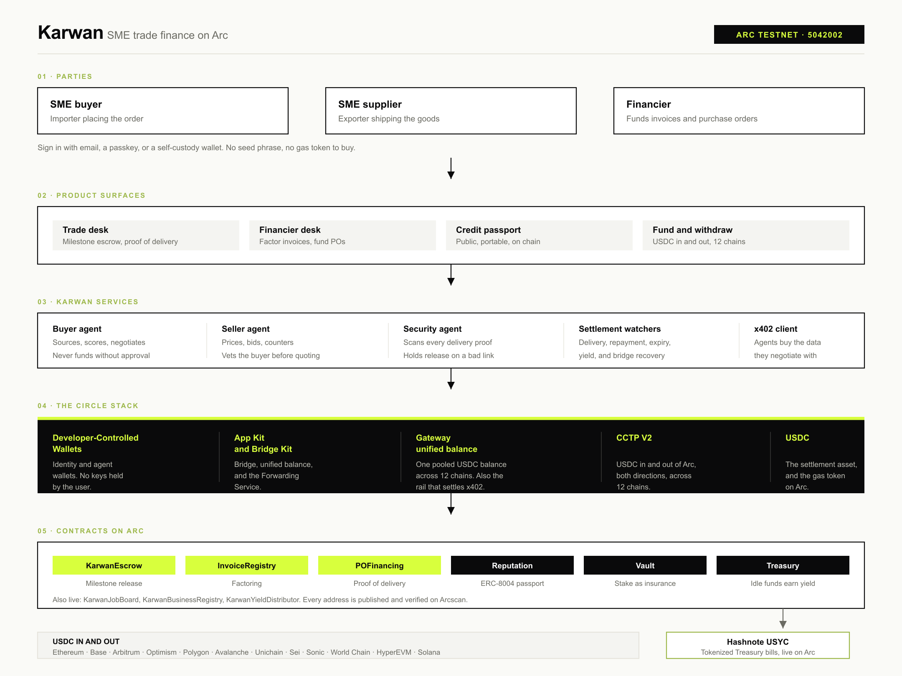

Milestone escrow, invoice factoring, purchase-order financing, and a portable credit passport for cross-border SME trade. Built on the Circle stack, live on Arc.
| Track | Track 2. Best SME Trade Finance and Working Capital Workflow |
| Live product | karwan.site · API at api.karwan.site |
| Repository | github.com/Iziedking/Karwan |
| Demo video | [ VIDEO LINK ] |
| Network | Arc Testnet, chain 5042002. USDC is the gas token. |
| Circle account | iziedking17@gmail.com |
A supplier in Lagos ships cotton to a buyer in Dubai. The goods leave in a week. The money arrives in ninety days, if it arrives. In between sits a correspondent banking chain that charges for every hop, a letter of credit most small exporters cannot get, and a working-capital hole the supplier funds out of pocket or not at all.
The financing exists. It just does not reach them. A bank underwrites against a credit file that a first-time exporter does not have, and the trade record that would build one is scattered across invoices, emails, and bank statements that no lender can verify. So the smallest firms, the ones for whom ninety days is the difference between growing and closing, pay the most for capital or go without it.
Karwan gives that trade a settlement layer and a credit history at the same time. The money sits in escrow and releases against delivery. Every settled deal, every repayment, every dispute writes to a public record that belongs to the business and travels with it. The trade is the underwriting. A supplier finishes their first shipment with cash in hand and a credit file a financier can read, and the second deal is cheaper to fund than the first.
The track brief names four example builds. Karwan ships all four, on chain, on Arc, in one product where they compose into a single flow rather than four demos.
| Track 2 example build | In Karwan | Where |
|---|---|---|
| Stablecoin escrow for import and export settlement, milestone-based release | Live. A deal splits into two to five milestones. The supplier marks a milestone delivered, the buyer reviews and releases that portion. The final milestone always needs an explicit buyer click and never releases on a timer. A missed deadline lets the buyer reclaim, and it counts against the supplier's record. | KarwanEscrow Any deal page |
| Invoice factoring and receivables financing with automated repayment | Live. A financier advances against an invoice at a discount tied to the supplier's reputation tier. The supplier is paid early. On settlement the contract pulls the agreed repayment, so the financier does not chase it. Both legs move native USDC. | KarwanInvoiceRegistry Financier desk |
| Purchase-order financing with proof-of-delivery triggers | Live. Working capital advanced against an accepted purchase order and held in contract custody. Proof of delivery is attested on chain by an allowlisted attester, and that attestation is what releases the capital to the supplier. A watcher drives release and repayment without a human in the loop. | KarwanPOFinancing Financier desk |
| SME credit passport from verifiable transaction history and repayment behaviour | Live. A public page per business, built from settled deals, repayment behaviour, and counterparty concentration. Reputation is value-weighted and counts distinct settled counterparties, so volume with one repeat partner cannot inflate a score. It follows the wallet, not the platform. | KarwanReputation (ERC-8004) /credit-passport/[address] |
Underneath all four is one primitive. Factoring, purchase-order financing, and the credit passport are not separate products bolted together. They read from the same escrow and write to the same reputation contract, which is why a supplier's first settled milestone already improves the price of their next advance.
The brief recommends four Circle tools and lists one gated tool. Karwan runs all five in production paths, not demonstrations.
| Product | How Karwan uses it |
|---|---|
| USDC Recommended |
The settlement asset for escrow, milestone release, factoring advances, purchase-order custody, repayment, staking, and platform fees. On Arc it is also the gas token, so a business never buys a second asset to move its own money. |
| Circle Wallets Recommended |
Developer-Controlled Wallets give every user an identity wallet and two agent wallets, provisioned on sign-in with an email or a passkey. An SME onboards without a seed phrase and without knowing a chain is involved. Web3 users can sign in with their own wallet instead, through Sign-In with Ethereum. |
| CCTP V2 with Bridge Kit Recommended |
USDC moves into and out of Arc across twelve chains, in both directions. Outbound settlement uses Circle's Forwarding Service to submit the destination mint, so a supplier cashes out to any supported chain without ever holding that chain's gas token. Solana Devnet is supported alongside the EVM chains. |
| Circle Gateway Recommended |
Two roles. It gives a business one pooled USDC balance across twelve chains, deposited once and spent to any of them from a single signature, with no chain switching and no source-chain gas. It is also the settlement rail for x402, netting the agents' per-call payments into batched on-chain settlement. |
| Hashnote USYC Gated and advanced |
Idle balances earn yield instead of sitting still. KarwanTreasury is an ERC-4626 vault that subscribes to real allowlisted USYC on Arc through the Hashnote Teller and redeems on demand, marked to the live on-chain oracle. Platform-fee reserves and idle staking principal route through it today. |
| x402 nanopayments Beyond the brief |
Karwan is both a buyer and a seller. Its agents pay a cent per call to pull a counterparty's settled-deal record before pricing a bid, and pay for live market research so both sides negotiate against the same grounded number. Karwan also sells five paid endpoints, including the credit passport and repayment behaviour, so an outside underwriter can price Karwan credit without asking Karwan for permission. |
The credit passport is the reason x402 matters here. A credit file nobody outside the platform can read is a marketing page. Karwan's is a paid, machine-callable endpoint on Arc: any lender, anywhere, pays a cent and gets a verifiable settled-deal record and repayment history. That is what makes it a passport rather than a profile.

Parties sign in without keys. Agents negotiate and settle. The Circle stack carries the money. Arc holds the record.
A Next.js frontend and a Hono backend sit above the Circle SDKs. The backend holds no user funds: it provisions Circle wallets, relays what needs relaying, and runs the watchers that drive delivery, repayment, expiry, and yield. The contracts are the source of truth, and every settlement event links to Arcscan from the live activity feed.
They do the work an SME cannot afford a person to do. A buyer agent sources suppliers, scores them on fit before reputation, and negotiates within a cap the buyer sets. A seller agent prices and counters, and vets the buyer's funding record before quoting. A security agent scans every delivery proof and every chat link, because in trade the fraud arrives as a link. No agent ever opens or funds an escrow without an explicit human approval, and a low-reputation counterparty routes to a human decision rather than an automatic decline.
| Contract tests | 362 passing, 0 failing, across 28 Foundry suites |
| Coverage | Includes conservation and vault invariant suites, and named attack suites for escrow timing, vault reentrancy, and reputation farming |
| Commits | 696 total, 336 in the last four weeks |
| Deployed | Nine contracts live and verified on Arc Testnet |
Karwan is not a prototype assembled for a deadline. It has been in continuous development since May, it is deployed, and people other than its author have used it.
A second contract generation is written, tested, and reviewed internally, and it ships as one immutable release rather than a mid-cycle redeploy, so the live deployment stays stable while the bundle is finished. It adds a contract-level guardian that can place bounded, auto-expiring holds and record delivery attestation but can never move funds, arbiter dispute resolution with proportional splits, consented on-chain deal clocks with a capped extension flow, and reputation hardened against farming by weighting standing on distinct settled counterparties. The tests above are the v2 suite. The upgrade lands in the coming weeks.
| Contract | Address |
|---|---|
| KarwanEscrow | 0x48797C04EE342067A68f29Fbb19B577077d77301 |
| KarwanInvoiceRegistry | 0x20a7CDf59b5f304De2b22a75e49f52353273E4E4 |
| KarwanPOFinancing | 0xc91122Eb88613C98d58616cD8973883142F74Bb5 |
| KarwanReputation | 0xBBAC748cA8C7a47e39Bd2AEaDbaa4e9f96ae4442 |
| KarwanVault | 0x2d4506284B2D778365b4B295100EF099F35973c5 |
| KarwanTreasury | 0x9d95E4810E7C8B815F1Fb1Ec02C19085f8C76573 |
| KarwanBusinessRegistry | 0xc64d347c9Fe451A3f1c8f4cF2d7a2E43D9AA771e |
| KarwanJobBoard | 0x35224C2234263B5506a9F7BfF4bb98e9FceD3FF3 |
| KarwanYieldDistributor | 0x9950b9a41A3e80930e451F2FEdaeb81e80195D03 |
| USDC | 0x3600000000000000000000000000000000000000 |
Hashnote USYC on Arc Testnet: token 0xe9185F0c5F296Ed1797AaE4238D26CCaBEadb86C, Teller 0x9fdF14c5B14173D74C08Af27AebFf39240dC105A, oracle 0x52b56c7642E71dc54714d879127d97cd0B3D4581. Retired contract generations stay registered so any open position remains exitable. Nothing gets stranded.
Nothing here needs to be taken on trust.
USDC as gas on Arc removes the single worst onboarding step in crypto commerce. An SME does not have to acquire a second, volatile asset before it can move its own money. Every other chain we support needed a gas story. Arc needed none, and the product is materially simpler for it.
Developer-Controlled Wallets let us delete the seed phrase from the product. A trader signs in with an email and has a working wallet. This is the difference between a demo and something an exporter in Kano will actually use.
Gateway's burn-intent design is better than it first appears. Because the signing domain carries no chain id and the payload is a set of burn intents, one signature can cover burns across several source chains at once. No chain switching, no source-chain gas. Once we understood that, the whole fund-and-withdraw surface collapsed into one card.
The CCTP Forwarding Service quietly unlocked outbound settlement everywhere. Because the destination mint is submitted for us, we did not need a wallet on each destination chain, and withdrawal coverage went from a handful of chains to every chain CCTP reaches.
Gateway reports only what has been deposited into the Gateway contract, not what is in the wallet. This is correct, and it is also the first thing every developer gets wrong, because "unified balance" reads as "all my USDC." An address holding several hundred USDC on Base reads as a zero Gateway balance, with nothing in the response to say why. A field distinguishing "pooled" from "held on chain, not deposited" would save every integrator the same afternoon.
Gateway accepts smart contract accounts as recipients but rejects them as signers. That asymmetry is defensible, and it is also invisible until a burn intent fails. It shaped our architecture: the pooled balance had to live on the user's own EOA. Stating it plainly in the Gateway docs, next to the deposit example, would be worth a paragraph.
Gateway has no history endpoint. A transfer can be fetched by id, but there is no way to list what an address has done. Any product showing a user their own transfer history has to keep a parallel ledger, which means the on-chain record and the product record can drift.
Circle Wallets cannot execute contracts on chains Circle has not named. A CCTP burn is a contract execution, so a chain outside Circle's supported list can be a destination but never a source for a Circle-wallet user. This is a reasonable boundary that is easy to trip over, because the CCTP chain list and the Circle Wallets chain list are published separately and are not the same list. One table showing both would prevent a whole class of bug.
The USDC decimal split on Arc is a live footgun. Native USDC gas is denominated at 18 decimals while the ERC-20 is 6. Both are correct and the reason is clear once you know it, but a value that is right in one context is off by a factor of a trillion in the other, and nothing in the tooling warns you.
Trade finance is a real business, not a hackathon genre. The near-term plan, in order.
The corridors Karwan serves first are the ones the caravan routes served: Africa, the Gulf, and South Asia. The name is not decoration. It is the thesis.